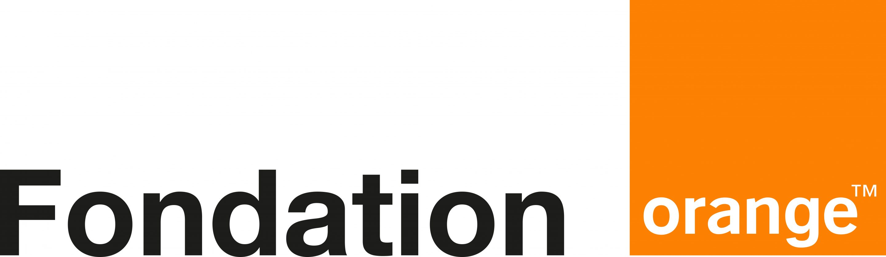
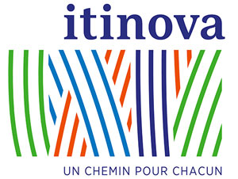
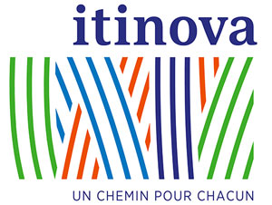

Balises Ouistici
Des balises "libres"
Les balises sonores Ouistici sont "libres", c'est à dire que les plans sont disponibles, utilisables, modifiables, améliorables par tout le monde (on parle aussi d'open-hardware pour l'électronique et open-source pour les logiciels).
S'équiper maintenant
Les balises sonores ne "parlent" pas tout le temps : elles sont déclenchées avec une télécommande (norme européenne).
Les personnes malvoyantes ou aveugles utilisent ces même télécommandes pour emprunter des passages piétons en sécurité (feux sonores).
Expérimenter
Les balises sonores sont utiles dans plusieurs situations : difficultés à s'orienter dans un environnement inconnu ou vaste (nouveau lieu, déficience visuelle), difficultés à lire (dys, illetrisme, petits enfants), langue étrangère, préférence pour l'information audio, informations simplifiées (FALC), etc.
Tout le monde peut y trouver une aide supplémentaire pour s'orienter et s'informer.
Partenaires
Nos partenaires

 



Soutenir le projet
Vous souhaitez soutenir le projet ? C'est possible de différentes façons !
- équiper vos lieux et nous faire des retours
- contribuer et diffuser vos plans, améliorations
- participer aux hackatons, au développement
- faire connaître le projet
- participer aux journées de maintenance citoyenne
- financer le fonctionnement du projet
- donner du temps (bénévolat, mécénat de compétence...)
- financer un développement particulier